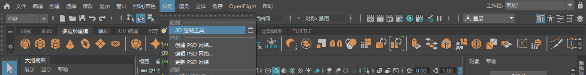
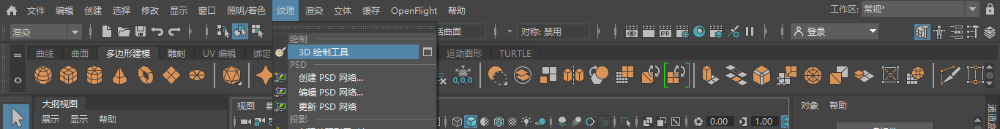

若要接受绘制，多边形曲面和细分曲面必须具有适配纹理空间中 0 到 1 范围的非重叠 UV。通常，“自动映射”(Automatic Mapping)会生成可用于绘制的 UV。有关详细信息，请参见多边形建模和细分曲面建模(www.autodesk.com/maya-docs-archive)。
另一个要求是在绘制曲面之前必须为其指定了纹理。可以在下列过程中指定纹理。
在 3D 对象上进行绘制
- 选择要在其上绘制的曲面。
注：
- 在“渲染”(Rendering)菜单集中，选择“纹理 > 3D 绘制工具”(Texturing > 3D Paint Tool) >
 ，以启动工具并打开“工具设置”(Tool Settings)编辑器。请参见“3D 绘制工具”(3D Paint Tool)设置。
提示： 为了确保在绘制时获得预期效果，建议您在开始绘制之前重置工具设置。为此，请单击“重置工具”(Reset Tool)。
，以启动工具并打开“工具设置”(Tool Settings)编辑器。请参见“3D 绘制工具”(3D Paint Tool)设置。
提示： 为了确保在绘制时获得预期效果，建议您在开始绘制之前重置工具设置。为此，请单击“重置工具”(Reset Tool)。 - 在“要绘制的属性”(Attribute to Paint)（在“工具设置”(Tool Settings)编辑器的“文件纹理”(File Textures)部分中）中，选择要绘制的属性。默认设置为“颜色”(Color)。
- 如果以前尚未绘制文件纹理或没有为一个或多个曲面指定文件纹理，则“命令反馈”(Command Feedback)行上将显示以下警告：
警告: 某些曲面的当前属性没有指定文件纹理。(Warning: Some surfaces have no file texture assigned to the current attribute.)
此外，在曲面上方移动笔刷时，笔刷轮廓上会显示 X (
 )，以表明您无法在选定的属性纹理上绘制。
)，以表明您无法在选定的属性纹理上绘制。
- 如果以前已绘制或指定了文件纹理，您不会收到警告且显示的笔刷不带 X，因此您可以准备开始绘制。跳到步骤 6。
- 如果以前尚未绘制文件纹理或没有为一个或多个曲面指定文件纹理，则“命令反馈”(Command Feedback)行上将显示以下警告：
- 单击“指定/编辑纹理”(Assign/Edit Textures)。此时将打开“指定/编辑文件纹理”(Assign/Edit File Textures)窗口。
-
在“大小 X”(Size X)和“大小 Y”(Size Y)框中输入纹理大小，然后选择“图像格式”(Image Format)并单击“指定/编辑纹理”(Assign/Edit Textures)。“保持纵横比”(Keep Aspect Ratio)选项可确保图像的比例保持不变。如果希望纹理的宽度和高度不同，请禁用此选项。
最大纹理大小为 16384 x 16384，并且每个尺寸都必须是 2 的幂。大于 4096 x 4096 的纹理可能会导致性能下降。
.iff 图像格式（默认选项）仅支持大小不超过 8k 的纹理。如果选择的大小超过 8k，帮助行(Help Line)中将显示错误。可以通过将纹理保存为 8192 x 8192 以下的大小或选择其他图像格式来解决此问题。
提示： 要为不同的曲面指定不同大小的纹理，请分别选择每个曲面或一组曲面并为其指定纹理。指定纹理后，可以选择要在其上绘制的曲面的任意组合。 - 设置模型的基础颜色并保存纹理。这将创建可擦除回去的纹理。请执行以下操作：
- 在“泛洪”(Flood)部分中，单击“颜色”(Color)样例，然后从“颜色选择器”(Color Chooser)中选择颜色。
- 将“绘制操作”(Paint Operations)设置为“Artisan 绘制”(Artisan Paint)。
- 单击“泛洪绘制”(Flood Paint)，然后单击“文件纹理”(File Textures)部分中的“保存纹理”(Save Textures)。
- 选择用于绘制、擦除、克隆、涂抹或模糊的笔刷。有关详细信息，请参见选择绘制笔刷。
- 根据需要修改任何其他设置，并在模型上拖动以进行绘制。有关这些设置的信息，请参见“3D 绘制工具”(3D Paint Tool)设置。
如果绘制“单个通道”(Single Channel)（灰度）属性（如凹凸或漫反射），则绘制的颜色将自动转换为灰度。
- 完成一个属性的绘制后，通过选择“要绘制的属性”(Attribute to Paint)旁边的属性，可以绘制另一个属性，而不必退出该工具。第一次绘制属性时，必须为其指定纹理，除非已在 Hypershade 中指定了纹理。
相关主题
- 在现有纹理上绘制
- 其他 3D 绘制工具操作
- 在对象上绘制（使用 Paint Effects 笔刷）